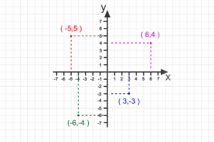
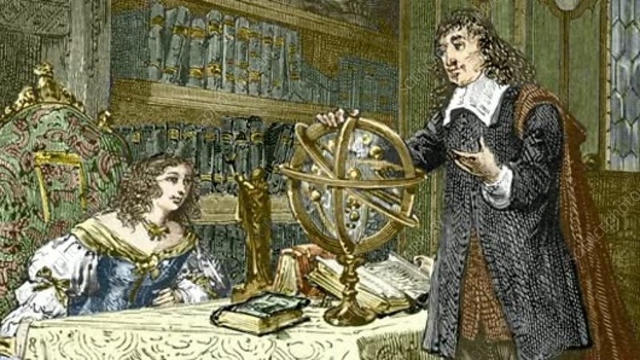

René Descartes nació el 31 de marzo de 1596 en La Haye en Touraine, Francia (actualmente la ciudad lleva su nombre: Descartes). Fue hijo de Joachim Descartes, consejero en el Parlamento de Bretaña, y Jeanne Brochard. Desde pequeño mostró gran inteligencia y una inclinación por el estudio. Recibió su educación en el colegio jesuita de La Flèche, donde estudió filosofía, matemáticas, física y lógica, adquiriendo una sólida formación intelectual.
Más tarde estudió Derecho en la Universidad de Poitiers, pero pronto se interesó más por la ciencia y la filosofía que por la práctica jurídica. Durante varios años viajó por Europa y sirvió como soldado, experiencia que aprovechó para reflexionar y desarrollar sus ideas. Descartes buscaba un método seguro para alcanzar el conocimiento verdadero, basado en la razón y la duda sistemática.
Es considerado el padre de la filosofía moderna y uno de los fundadores del racionalismo. Su obra más famosa, Discurso del método (1637), incluye su célebre frase “Pienso, luego existo” (Cogito, ergo sum), con la que estableció la certeza del pensamiento como base del conocimiento. En matemáticas realizó una aportación fundamental al crear la geometría analítica, que permite representar figuras geométricas mediante ecuaciones algebraicas en un plano cartesiano. Gracias a él utilizamos hoy el sistema de coordenadas cartesianas.
Descartes también hizo contribuciones importantes a la óptica, la física y la filosofía de la ciencia. En sus últimos años fue invitado a Suecia por la reina Cristina para impartirle lecciones de filosofía. Sin embargo, el clima frío y las exigencias de su trabajo afectaron su salud.
Falleció el 11 de febrero de 1650 en Estocolmo, Suecia. Hoy es reconocido como una de las figuras más influyentes en la historia del pensamiento occidental y como un puente fundamental entre las matemáticas y la filosofía moderna.